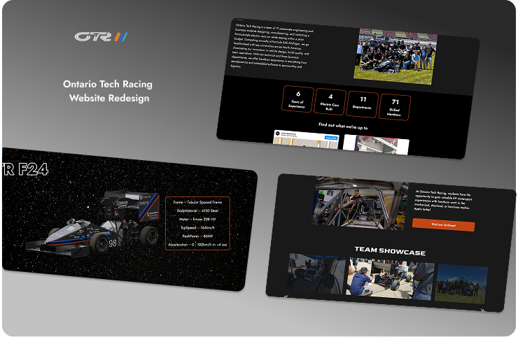
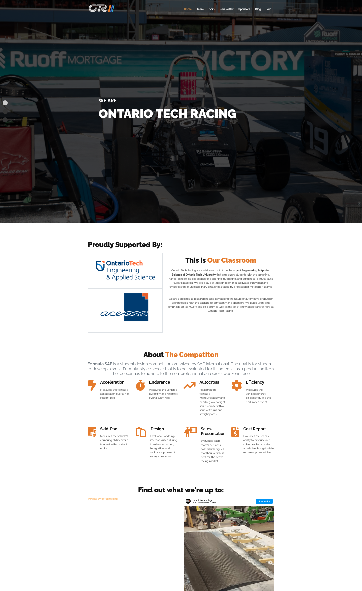
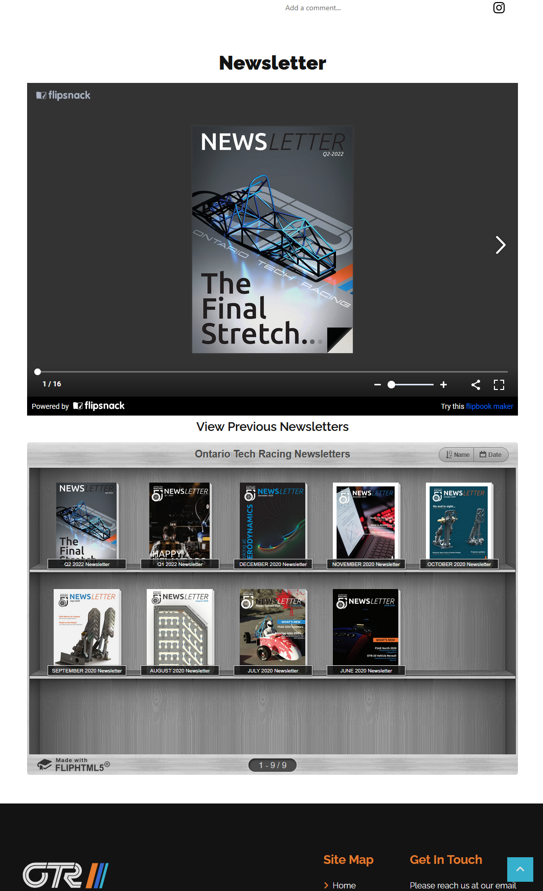
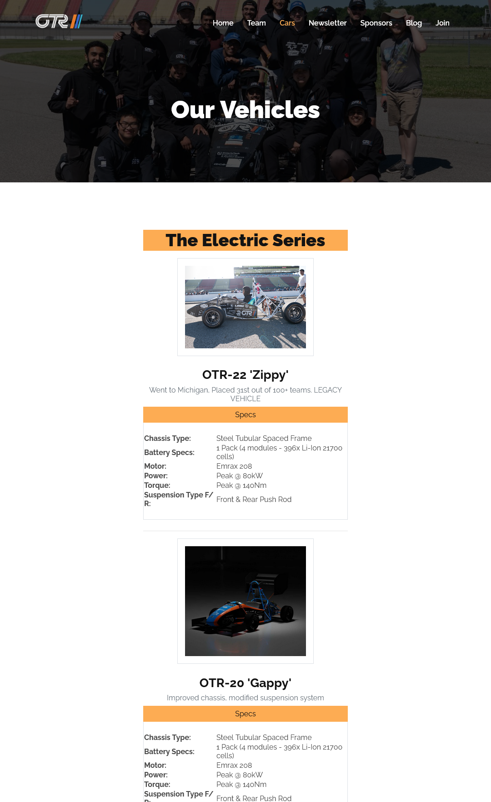
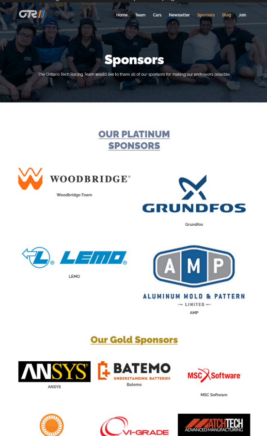
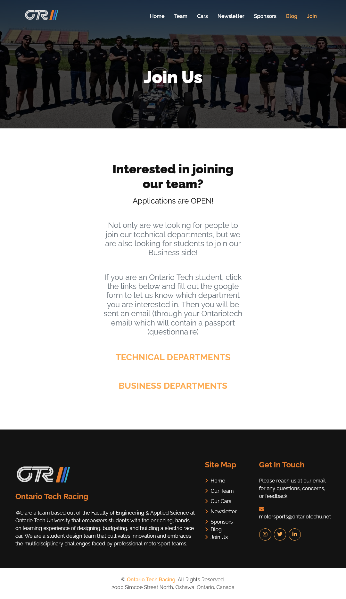
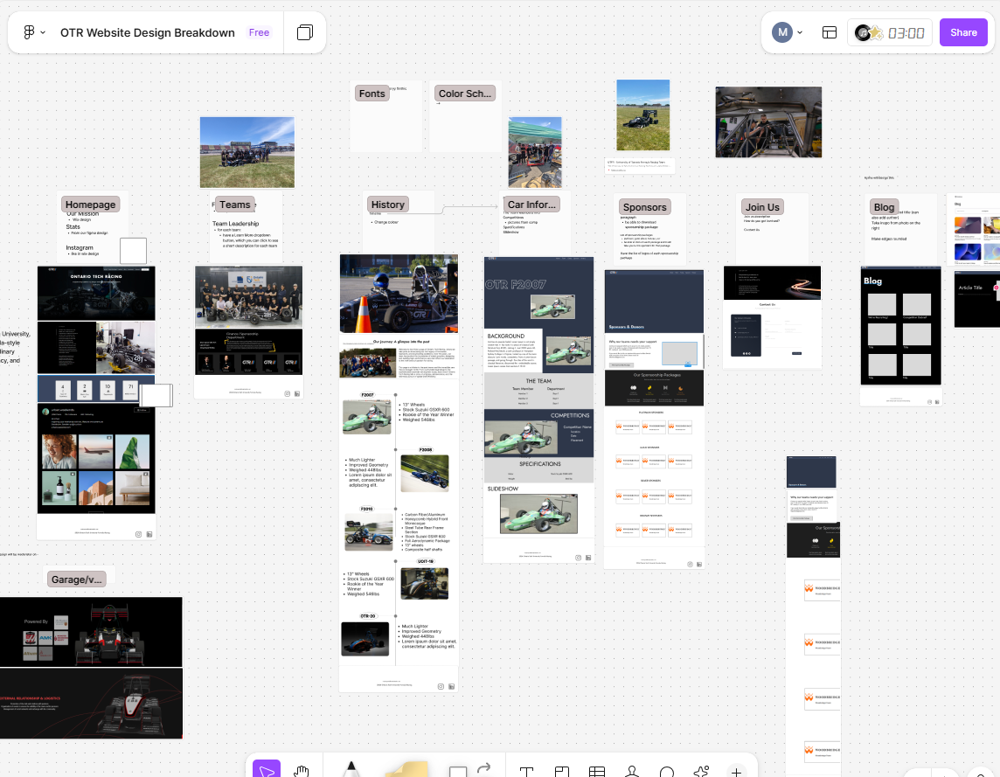
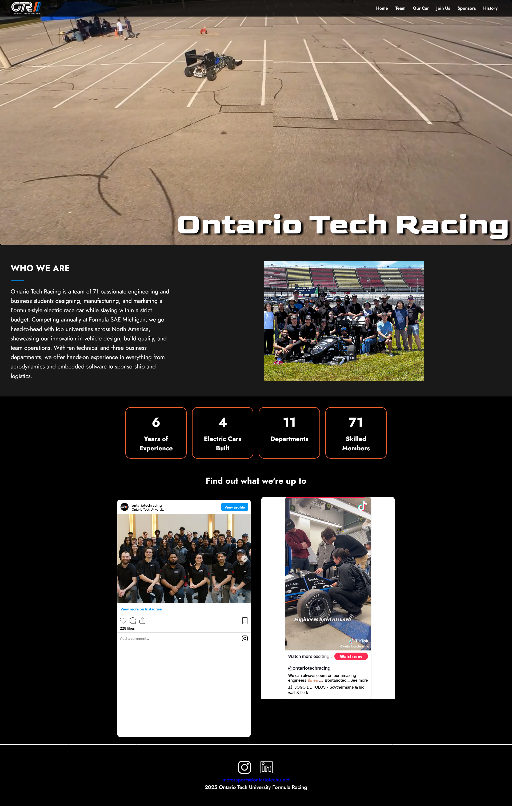
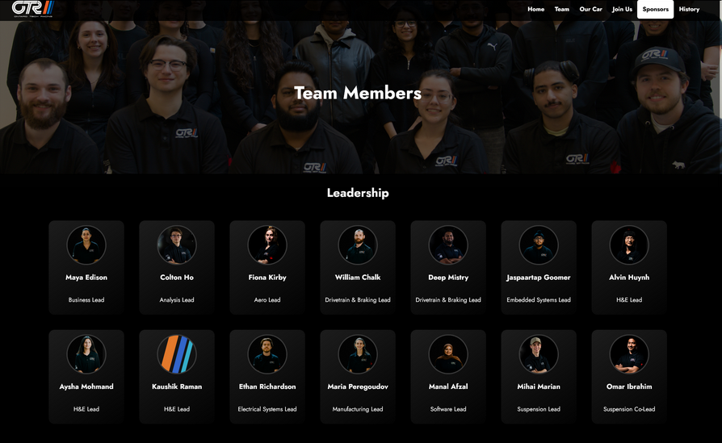
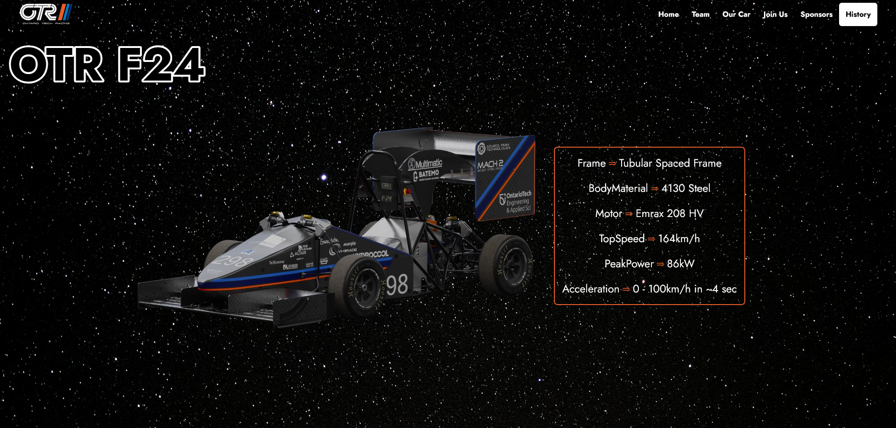

Club / Ontario Tech Racing Website Redesign
Context
Ontario Tech Racing is a student-led FSAE team that builds a full-fledged car that competes with other universities at the Michigan Competition. I joined as a Software Lead to redesign the team website, aiming to make it more clear, modern and impactful for both sponsors and students.
Timeline
Sep 2024 – April 2025
Team
4 Students
Role
Software Lead
Frontend Developer
Problems
Key issues throughout the pages
- The homepage was cluttered and overwhelmed users with university branding, and the visual hierarchy confused first-time users.
- The tweets and Instagram sections had not been updated in years, and the broken links reflected poorly on our team.
- The car page listed information in chronological order but forced users to scroll endlessly to read through the car's history.
- In the newsletter page, users had to manually click to read a long PDF, which felt outdated and cluttered.
- Forms had not been updated in the Join Us page, which made the entire website feel disconnected.
Old page views





Research process
We met with the OTR business team early in the design phase to align on expectations.
Their top priorities for the redesign included:
- Use Ontario Tech branding (navy blue, orange, logos)
- Remove outdated content (Newsletter, Blogs)
- Improve sponsor visibility with clear logos and links
These insights shaped the structure and focus of our redesign.
Design process
To begin our redesign and get inspiration, we conducted a competitive analysis on other top Formula SAE teams (UofT, ETS Montreal) and how they structured their websites. They used interactive visuals and clear team stats to attract sponsors.
We noticed that:
- Interactive timelines were common and were clear and compact to display history.
- Sponsors were structured by tiers, and had clear links to the websites.
Pages we modified
- Homepage
- Sponsors
- Team Page
- Car Information Page
- Join Us Page
Pages we removed
- Newsletter
- Blog
Pages we added
- Garage Page
- History Page
Design breakdown
Our design process began by reviewing a Wix website that was created by a member in the previous year. Using that old Wix draft, we created a Figma wireframe. This helped us prototype quickly, while applying the new design ideas we learned from our design and informational interviews.
I led this exploration by identifying what new ideas we needed to design, and made development plans for faster deployment.

We created a rough wireframe by extracting key visuals from the site, and created a FigJam where we added components that we wanted to keep. This approach helped us move efficiently through our design process, without sacrificing originality.
Development process
I implemented:
- The Homepage and Sponsors page layout from Figma to code.
- The Teams page collaboratively with other developers, implementing components and ensuring design consistency.
- Responsiveness across the site, especially for new students and potential sponsors.
This experience helped me bridge the gap between design and development, and taught me the importance of clarity and usability when implementing design layouts.
Final deployed pages



Outcomes and reflections
This was my first time designing and developing an application as part of a team. With four designers involved, maintaining a consistent design across all pages was challenging.
To address this, I made it a point to discuss all changes during our weekly meetings so that any design inconsistencies could be identified and resolved iteratively.
Overall, it was a rewarding experience. I appreciated the flexibility to continue refining our design throughout the development phase.